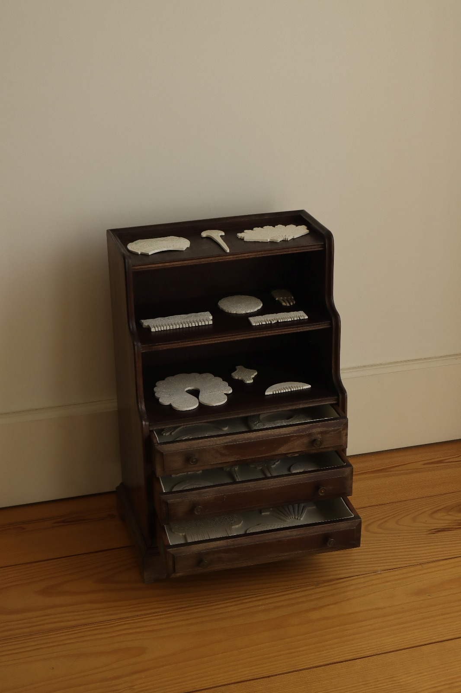
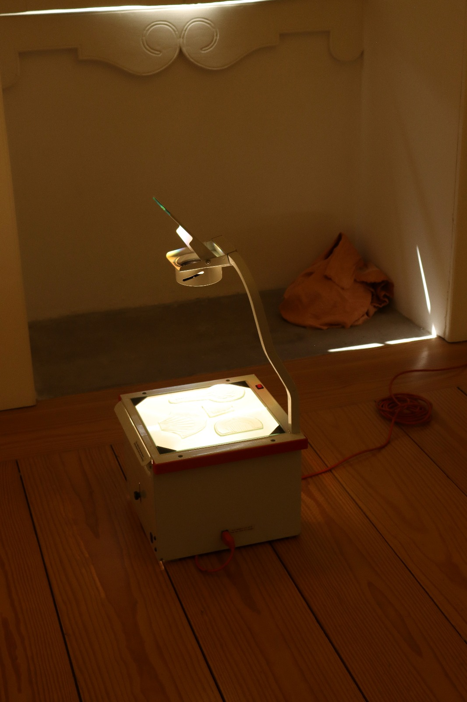

Escultura 1
2023

Escultura 2
2022

Escultura 3
2021

Escultura 4
2020

Escultura 5
2019
2023
2022
2021
2020
2019
Frequenta a Licenciatura em Artes Plásticas – Escultura na Faculdade de Belas-Artes da Universidade do Porto. A sua prática artística investiga como objetos de pequena escala podem condensar gestos, afetos e histórias, funcionando como vestígios e relicários do quotidiano.
Interessa-lhe a relação entre objeto e corpo, bem como a forma como determinados artefactos assumem valor simbólico ou afetivo, oscilando entre o íntimo e o coletivo, o artístico e o arqueológico.
Na sua pesquisa, explora materiais como cerâmica, vidro e porcelana, articulando técnicas tradicionais e experimentais. Tem também interesse em aprofundar a prática em diferentes áreas, tendo já adquirido experiência em serralharia, soldadura, vidro soprado, técnicas de fusão em vidro, técnicas de impressão, têxtil e fundição.
Os seus interesses incluem temas ligados à arqueologia, à catalogação, ao ornamento, à joalharia de luto e ao ajuar funerário, questionando o que torna um objeto valioso.
Concluiu o curso de Produção Artística – Têxteis na Escola Artística de Soares dos Reis, onde participou em projetos nacionais e internacionais, como a Bienal Contextile 2022. Paralelamente, estudou violoncelo durante mais de uma década, experiência que reforçou a disciplina, a sensibilidade e a atenção ao detalhe que hoje atravessam o seu percurso em escultura.
O presente projeto parte de uma investigação em torno do pente como objeto simbólico, técnico e afetivo, tomando como ponto de partida os gestos de cuidado – em particular o ato de pentear – e a sua materialização através do cabelo, expandindo-se para uma constelação de formas e gestos que orbitam a ideia de friso, relíquia e arqueologia ficcionada.
Pretendo compreender de que modo os objetos que nos rodeiam, especialmente aqueles ligados ao corpo e aos gestos quotidianos, funcionam como extensões da memória, preservando a ausência e reinscrevendo a presença de quem já não está. Mais ainda, interessa-me investigar como os objetos congelam em si as nossas histórias, acumulando vestígios de gestos, afetos e experiências, e quais são as histórias que eles próprios carregam e preservam.
Este olhar procura revelar a dimensão relacional e temporal dos objetos, não apenas como suportes de memória pessoal, mas também como artefactos que estruturam a narrativa da existência humana.